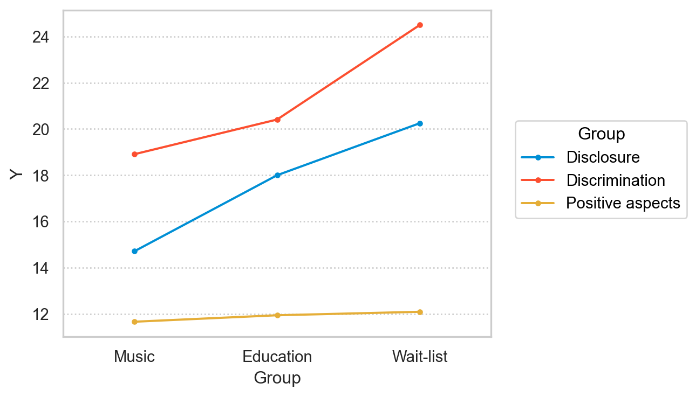

진실험 설계 (11장)
상담연구방법론, by Heppner, P. P., Wampold, B. E., Owen, J., Thopso, M. N.
준실험 설계 (quasi-experimental design)와 대비하여 진실험 설계 (true experimental design)는
가장 엄격한 실험 설계로 다음이 강조됨.
- 실험통제
- 외재변수의 최소화
- 내적 타당도
크게 2가지 설계로 나눌 수 있음.
- 집단 간 설계 (between-group design)
- 참여자가 다른 처치에 무선 할당
- 참여자 내 설계 (within-subject design / repeated measures design)
- 참여자가 모든 처치를 받음
- 처지의 순서가 무선 할당
예를 들어, 참여자의 빈곤과 정의에 대한 공감을 높이는데 유용한 비디오 2개의 효과를 비교하는데,
- 집단 간 설계: 참여자의 절반은 비디오 1을 시청 / 참여자의 절반은 비디오 2를 시청
- 참여자 내 설계:
- 모든 참여자는 비디오 1, 2를 모두 시청하는데,
- 참여자 절반은 비디오 1 \(\rightarrowtail\) 비디오 2 시청
- 나머지 절반은 비디오 2 \(\rightarrowtail\) 비디오 1 시청
참여자 할당
무선 배정하여 편향없는 (평균적) 동질적인 집단을 형성
- 실제로는 무선 배정(random assignment)의 결과가 완전히 동질적인 집단을 형성하지는 않음
- 남녀의 비율이 동일하지 않을 수도…
- 중요한 요소의 경우 미리 비율이 동등하게 배정하는 매칭 기법을 사용하기도 함
- 예. 나이를 동등하게 만드려면: 20, 21, 22 … 살의 참여자들 각각 묶은 후 무작위로 집단에 배정.
- 상담연구에서는 연구 시작시 전체 표본을 갖고 있지 않고, 순차적 할당을 해야하는 경우가 많음.
- 상담 센터에서 하루에 몇 명씩 상담을 하는 경우, 오는 순서대로 다른 집단에 할당.
집단 간 설계 (between-group design)
대표적인 설계 두 가지
- 사후 검사 통제집단 설계 (posttest-only control group design)
- 사전-사후 검사 통제집단 설계 (pretest-posttest control group design)
사후 검사 통제집단 설계
무선화 \(\begin{cases} A: ~~~~ T_X ~~~ \rightarrowtail ~~~~ Ob_{2a} \\ B: 통제집단 \rightarrowtail Ob_{2control} \end{cases}\)
강점
- 내적타당도 높음
- 역사, 성숙, 도구화, 검사 효과, 회귀 등 통제됨
- 예를 들어, 극단적인 점수들이 있었다해도 두 집단에 동일하게 회귀할 것으로 기대.
- 두 관찰치의 차이(\(Ob_{2a}\) \(Ob_{2control}\)) 는 처치(\(T_X\))의 효과로 귀인하는데 무리가 없음.
- 사전검사가 없다는 것은
- 집단 A에서 실제로 처치에 따른 변화가 일어났다고 정확히 주장하기는 어려움.
- 단지, 처지를 받지 않았을 때 대비해서 차이가 있다고 주장할 뿐임.
- 사전 검사가 없다는 것의 큰 장점은
- 참여자에게 덜 부담을 주며,
- 연구자에게도 시간과 노력을 줄여 주며,
- 사전, 사후 검사값을 참여자별로 매치할 필요가 없으므로 익명으로 실시할 수 있음.
- 사전 검사 민감화를 제거할 수 있음.
단점
- 사전 검사가 없으므로,
- 처치 이전의 참여자들의 동등성을 확인할 수 없음.
- 또한, 참여자들의 기능 수준 등을 파악할 수 없음.
- 선택(selection)과 처치의 상호작용이 발생할 수 있음.
- 예를 들어, 진로 계획 워크샵이 직업 경험이 많은 대학생에게만 효과적일 수 있음.
- 즉, 처치가 처지 집단의 일부 사람들에게만 효과가 있을 수 있음.
- 일종의 외적 타당도의 문제라고 볼 수 있음.
- 사전 검사가 있다면 각 참여자들의 변화를 파악할 수 있음.
- 처치와 통제 집단을 동시에 측정하지 않는다면 역사(history)의 효과가 발생할 수 있음.
연구 예시 (Silverman, 2013)
- 정신과 입원 환자를 대상으로 음악 치료가 낙인에 미치는 효과를 검증
- 세 집단: 1) 음악 치료 집단, 2) 교육 집단, 3) 대기자 통제집단

사전-사후 검사 통제집단 설계
무선화 \(\begin{cases} A: ~~~~ Ob_{1a} ~~~ \rightarrowtail ~~~~ T_X ~~~ \rightarrowtail ~~~~ Ob_{2a} \\ B: Ob_{1control} \rightarrowtail 통제집단 \rightarrowtail Ob_{2control} \end{cases}\)
강점
- 이전 설계와 마찬가지로 내적타당도 높음
- 참여자가 사전, 사후 두번 측정되므로, 참여자 고유의 특성을 파악할 수 있음
- 한 개인을 반복 측정(repeated measures)하면, 그 측정치들 간의 dependency가 존재하여, 그 개인의 특성이 파악할 수 있음.
- 종속변수의 변량을 줄여, 통계적 검증력을 높일 수 있음.
- 사전 검사를 통해 중도 탈락하는 참여자들에게 편향이 존재하는지 파악할 수 있음.
- 예를 들어, 불안에 대한 처치 효과를 보는데, 탈락한 참여자들의 불안 수준이 특별히 높은지 파악.
- 참여자를 선별적으로 선발하는데 사용될 수 있음.
- 예를 들어, 중간 정도 우울을 보이는 참여자들만을 선발
- 만약, 처치가 우울 수준이 어느 정도 이상인 사람들에게만 효과가 있다면, 선발과정이 없다면, 효과가 거의 없는 것으로 나올 수 있음.
- 사전 검사를 통해 참여자를 기술할 수 있음
- 예를 들어, 불안 수준의 정도에 대한 정보를 통해 일반화할 수 있는 범위를 파악할 수 있음.
- 참여자 각각에 대해 사전-사후 검사를 통해 그 변화를 파악할 수 있음.
- 이는 어떤 이들에게 치료 효과가 큰지에 대한 정보를 제공할 수 있음.
- 추후 연구에서 중요한 자료로 활용될 수 있음.
- 참고로, 이 차이값(gain scores)을 통계적으로 분석할 때 유의할 것; 예. 시작시 높은 값을 보인 참여자의 차이(gain scores)가 더 클 수 있음.
- 사전 검사를 통해, 무선 할당된 집단 간의 큰 차이가 없음을 확인할 수 있음.
- 단, 정확한 기준은 없음.
- 모든 특성을 다 조사한 것이 아니므로, 여전히 측정하지 않은 측면에서 다를 수 있음.
- 짝짓기 절차(matching procedure)를 통해 중요한 부분에서 더 동등하게 할당할 수 있음.
단점
- 사전 검사는 처치에 민감하게 만들어, 반복된 측정치에 변화을 만들 수 있음.
- 예를 들어, 데이트 폭력에 대한 워크샵의 효과가 사전 검사에서 질문지로 인해 그 효과가 증폭될 수 있음.
- 처치 전에 깊이 생각해 보거나 다른 방식으로 생각하도록 유도될 수 있음.
- 무선 할당된 두 집단 모두에서 동등하게 나타날 수 있으므로, 내적타당도보다는 외적타당도의 문제로 볼 수 있음.
- 즉, 워크샵의 효과가 사전 검사 없이도 나타나는가?
연구 예시 (Shechtman & Pastor, 2005)
- 이스라엘의 학습장애 아동 센터에서 초등생 200명(2-6학년)을 대상으로 두 가지 유형의 집단 처치의 효과성을 검증
- 각 학년별로 그룹핑을 한 후 5개 집단으로 무선 할당
- AA, AA + CBTG, AA + HGT, CBTG, HGT
- 조건 1: cognitive–behavioral treatment groups (CBTG)
조건 2: humanistic group therapy (HGT)
조건 3: academic assistance (AA)
Abstract
The authors of this study examined the outcomes and processes of 2 types of group treatment— cognitive–behavioral treatment groups (CBTG) and humanistic group therapy (HGT)—offered to 200 elementary schoolchildren in a center for students with learning disabilities in Israel. Results indicated that the addition of either type of group treatment to individual academic assistance was more effective than the latter alone on most measures. In fact, on the majority of measures, group treatment without academic assistance was more effective than just individual assistance. Finally, HGT was more effective than CBTG on most measures. Most of the outcomes were sustained at follow-up, and some even increased from termination to follow-up, although effect sizes were quite low. Process measures included the Client Behavior System and the therapist Helping Skills System, which were measured at 5 points in time. Differences between the 2 treatment types were revealed on both process measures, including differences in the growth curve of these behaviors.
통제집단의 사용
통제집단: 아무런 개입/처치도 받지 않는 집단
통제집단을 사용하기 어려운 경우
- 처치를 필요로 하는 참여자들
- 효과가 있는 것으로 아는 참여자들
- 자살 위험성이 있는 내담자들
통제집단이 필요하지 않은 경우
- 두 처치의 비교가 목적인 경우
- 통제집단을 사용하면 추가적 정보를 획득할 수는 있음
개입이 없는 통제집단을 설정해도 종종 대안적 개입이나 다른 곳에서 도움을 얻기도 함.
상담연구에서는
- 주로, 개입이 전혀 없는 통제집단보다는 대기자 통제집단(waiting-list control group)을 사용함.
- 대기자 집단은 처치 집단의 사후 검사 후 처치가 실행됨.
- 단점은 대기자 집단의 추수(follow-up) 연구가 어려움; 대기자 집단이 처치에 들어가므로.
위약 통제집단 (placebo control group)
- 그들은 제대로 된 처치를 받고 있다고 믿으나,
- 그 처치는 구체적이지 않고 효과가 없는 것으로 수행됨.
- 예를 들어, 적극적인 집단상담과 대비해 단순한 토론 집단으로 설정.
- 내담자의 기대, 주의, 그 외에 효과로부터 처치의 효과를 분리할 수 있음.
짝지어진 통제집단 (matched control group)
- 짝짓기를 통해 참여자들이 처치 집단과 통제 집단에 중요한 부분에서 동등하게 할당됨.
- 예를 들어, 수감자를 대상으로 한 취업 중심 집단상담 개입의 효과를 보는데,
- 나이와 출소일이 상담 개입결과에 영향을 미칠 것으로 예상하여,
- 나이와 출소일 각각에 대해 동일한 참여자를 묶은 후, 무선 할당
- 예를 들어, 내담자의 기독교에 대한 언급에 대한 상담자의 반응이 상담에 영향을 줄 것이라고 예상하여,
- 기독교에 대한 믿음을 측정하는 척도를 이용해 동일한 점수의 참여자들을 묶은 후, 3개의 집단에 무선 할당
- 3개의 집단은 기독교에 대한 태도에 대해 동일한 점수를 지니게 됨.
요인 설계 (factorial design)
두 개 이상의 독립변수들의 상호작용 효과를 파악하기 위해 사용됨.
예를 들어, 고등학생을 대상으로 비교 문화 인식(cross-cultural awareness)을 증진하는 두 가지 개입의 효과를 검증하는데,
- 두 가지 처치 집단 + 통제 집단 (3가지 수준)
- 성별에 따라 변화는가? (2가지 수준)
| T1 | T2 | 통제집단 | |
|---|---|---|---|
| 남학생 | 20 | 10 | 5 |
| 여학생 | 8 | 15 | 5 |

강점
- 상호작용 효과(interaction effect)를 파악할 수 있음.
- 두 가지 개입이 성별에 따라 동일한 효과를 보이지 않음
- 남학생에게는 T1이 더 효과적이고, 여학생에게는 T2가 더 효과적임.
- 참여자의 성별, 개입의 유형, 내담자의 나이, 내담자의 문제해결 양식과 같이 처치가 작동할 수 있는 조건들에 대한 답을 제공
- 상호작용과 함께, 주 효과(main effect)라고 불리는 각 독립변수의 효과를 파악할 수 있음.
- 비교 문화 인식을 증진하는 프로그램은 효과적인가?
상호작용이 없는 경우
단점
- 변수가 추가됨으로써 모형이 복잡해짐.
- 3개 변수 간의 상호작용만 해도 해석 및 분석이 어려워짐
- A, B, C 독립변수에 대해서 A, B, C 각각의 주효과와 AxB, AxC, BxC, AxBxC 상호작용 효과를 파악해야 함.
- 통계적 검증력도 낮아짐.
- 더 많은 표본이 필요함.
연구 예시 (Merrill, Reid, Carey, & Carey, 2014)
- 알콜 사용을 줄이는데 “단기 동기적 개입”(처치 vs. 통제)의 효과성을 “성별”과 “우울 수준”에 따라 비교
- 여성의 경우
- 우울 수준이 낮은 집단은 통제집단에 비해 알코올 사용이 줄어듦
- 우울 수준이 높은 집단은 통제집단과 차이가 없었음. 즉, 효과가 없었음.
- 남성의 경우
- 우울 수준이 낮은 집단은 통제집단과 차이가 없었음. 즉, 효과가 없었음.
- 우울 수준이 높은 집단은 통제집단에 비해 알코올 사용이 줄어듦
참여자 내 설계 (within-subject design)
- 참여자는 모든 처치 조건에 노출됨.
- 처치의 순서가 무선 할당됨.
- 참여자가 자기 자신의 통제(control) 역할을 하게 됨.
- Repeated measures design이라고도 함.
교차 설계 (crossover design)
\(~~ Ob_{1} ~~ \rightarrowtail ~~ T_{X1} ~~ \rightarrowtail ~~ Ob_{2} ~~ \rightarrowtail ~~ T_{X2} ~~ \rightarrowtail ~~ Ob_{3} ~~\)
예를 들어, 진로 상담 내담자의 “진로 성숙도”에 미치는 두 가지 처치, 1) 스트롱 흥미 검사 해석, 2) 직업 가계도(work genograms)의 효과를 비교하고자 한다면,
- 측정(\(Ob\)): 강점 자기효능감 척도
- 첫 번째 처치(\(T_{X1}\)): 직업 가계도
- 두 번째 처치(\(T_{X2}\)): 스트롱 흥미 검사 해석
만약, 첫 번째 변화(\(Ob_{2}\) - \(Ob_{1}\))가 두번째 변화(\(Ob_{3}\) - \(Ob_{2}\))보다 크다면,
- 직업 가계도(\(T_{X1}\))의 효과가 스트롱 흥미 검사 해석(\(T_{X2}\))보다 크다고 볼 수 있는가???
- 내적타당도를 위협하는 여러 요인들이 존재
- 예를 들어, 역사, 성숙, 순서 효과, 연쇄 효과 등
- 순서 효과: 가계도 처치가 두번째로 처지될 때 더 효과적일 수 있음.
- 연쇄 효과: 가계도 처치는 스트롱 흥미 검사 해석 뒤에 추가적으로 제시되어야만 효과가 있을 수 있음. 즉 처지 간의 상호작용
순서 균형 교차 설계
순서 균형(counterbalancing)을 통해 내적타당도의 위협을 통제
무선화 \(\begin{cases} ~~ Ob_{1a} ~~ \rightarrowtail ~~ T_{X1} ~~ \rightarrowtail ~~ Ob_{2a} ~~ \rightarrowtail ~~ T_{X2} ~~ \rightarrowtail ~~ Ob_{3a} ~~ \\ ~~ Ob_{1b} ~~ \rightarrowtail ~~ T_{X2} ~~ \rightarrowtail ~~ Ob_{2b} ~~ \rightarrowtail ~~ T_{X1} ~~ \rightarrowtail ~~ Ob_{3b} ~~ \end{cases}\)
- \(T_{X1}\)의 효과가 첫번째로 실시되었을 때와 두번째로 실시되었을 때 동일한지 테스트할 수 있음.
- \(T_{X2}\)의 효과도 마찬가지
- 순서효과가 존재한다해도 두 처치에 “균형을 맞췄다”고 할 수 있어 그 효과가 어느 정도 통제되었다고 볼 수 있음.
연구 예시 (Piet, Hougaard, Hecksher, & Rosenberg, 2010)
- 사회공포증이 있는 대상으로 “집단 마음챙김 기반 인지치료”와 “집단 인지행동치료”의 효과를 비교
강점과 한계점
실험 통제
- 순서 균형 교차 설계를 통해 내적타당도의 위협이 낮음.
- 각 참여자가 반복 측정되며, 자신의 통제로 사용되므로, 개인 오차 변량이 감소함.
통제적 검증력
- 모든 참여자가 독립변수의 모든 수준을 경험하므로,
- 표본의 수가 그 만큼 배가 됨.
- 통계적으로는 집단 간 설계에 비해 절반 수준의 표본으로 비슷한 검증력을 갖음.
시간
- 연구 시간이 오래 걸림.
- 가령, 내담자 24명을 대상으로
- 집단 간 설계: 12명씩 2개 집단으로 무선 할당되어 동시에 처치가 진행
- 참여자 내 설계: 12명이 2개 집단으로 할당된 후 각각 2번의 처치를 받아야 함으로 2배의 시간이 걸림.
순서 효과
- 순서 효과를 평준화했지만, 순서 효과가 얼마나 어떻게 있는지는 알 수 없음.
변수의 제한
양립 불가능한 처치가 존재
- 예를 들어, desensitization와 flooding을 순차적으로 처치하기 어려움
- 여러 처치가 서로에게 주는 영향에 대해 주의깊게 고려해야 함.
- 또는, 성격, 인구학적, 신체적 특징들은 변화시킬 수 없음
- 성별을 바꿀 수 없음.
- 시골 출신이자 도시 출신 일 수 없음.
이런 설계의 한계에도 창의적 설계를 통해 유용한 연구를 만들어 낼 수 있음을 기억할 것!